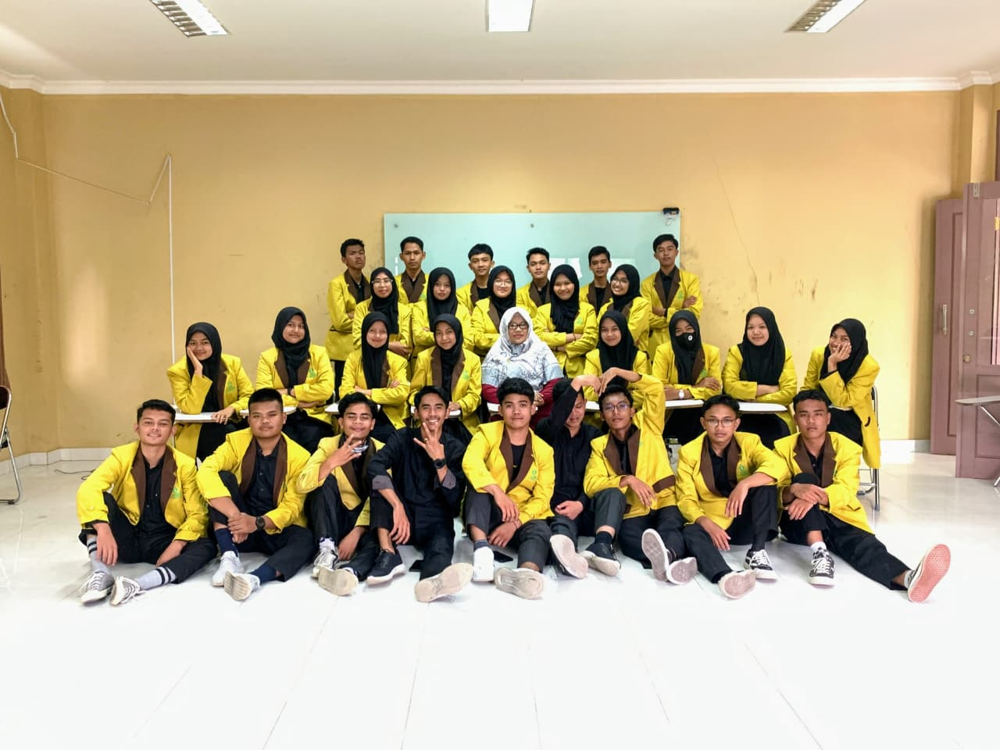
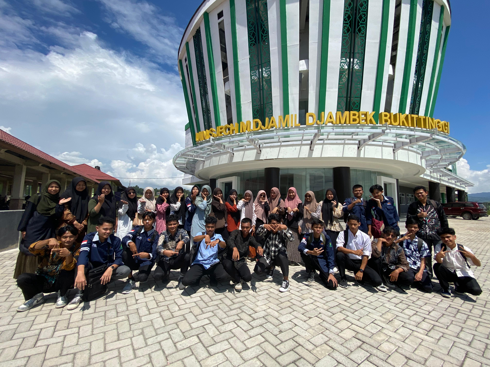
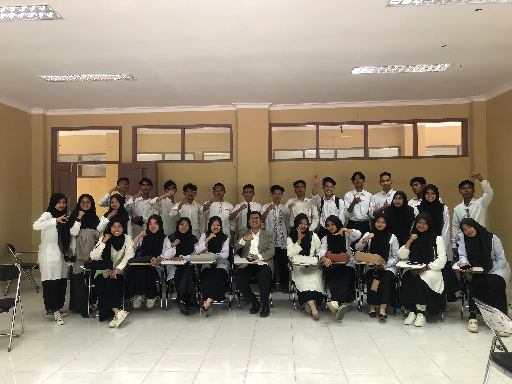
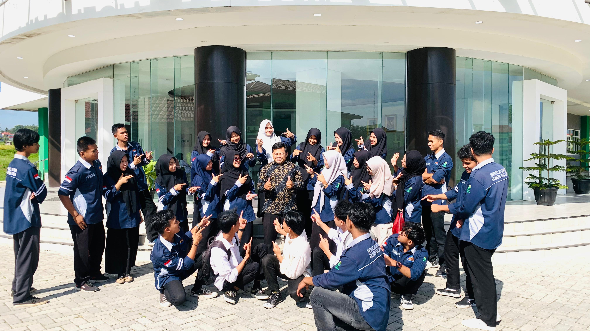
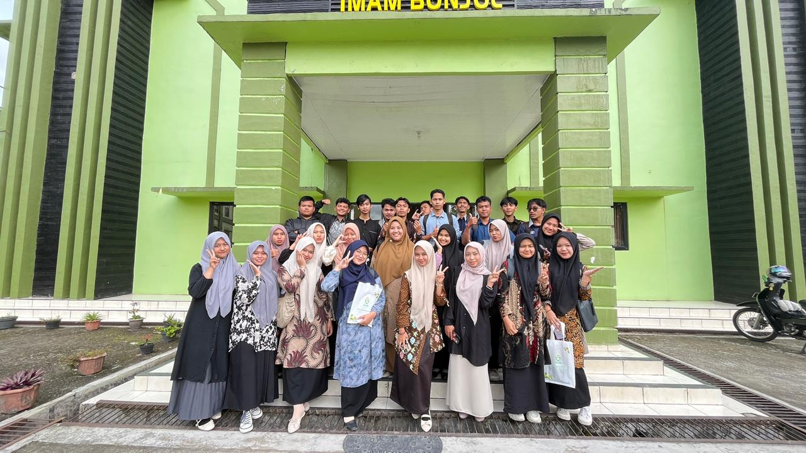
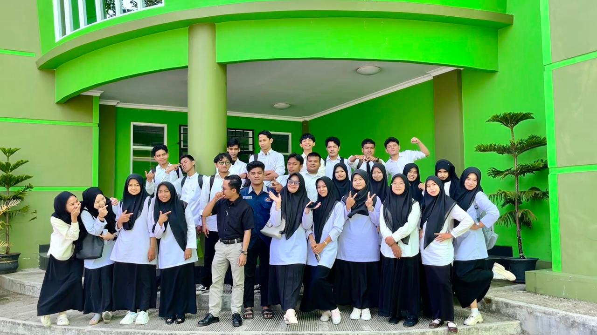

🎉 Ospek & Perkenalan Pertama
Semua dimulai dari sini. Hari-hari ospek yang menegangkan sekaligus seru — foto bersama di depan Gedung Maroko menjadi kenangan pertama yang melekat. Wajah-wajah baru dari berbagai daerah bersatu dalam satu almamater kuning kebanggaan.
Dari saling asing menjadi saling mengenal. Itulah ajaibnya masa orientasi: dalam hitungan hari, orang asing bisa berubah jadi sahabat terdekat.


📚 Adaptasi & Ritme Baru
Semester dua adalah masa adaptasi yang sesungguhnya. Mulai terbiasa dengan jadwal kuliah yang padat, tugas yang terus menghampiri, dan dosen-dosen dengan gaya mengajar yang beragam.
Kebersamaan semakin hangat — sesi belajar bareng, makan siang di kantin sambil ngerjain tugas, sampai kelompok diskusi yang terkadang berubah jadi sesi curhat panjang.



💡 Mulai Berkembang
Semester tiga adalah era dimana semua mulai terasa lebih hidup. Angkatan semakin solid, kegiatan kampus makin ramai, dan rasa percaya diri mulai tumbuh. Foto bersama di gedung kampus jadi bukti betapa kompaknya kita.
Proyek kelompok mulai kompleks, presentasi makin sering, dan skill satu sama lain mulai keliatan. Di semester ini kita mulai sadar — PTIK A bukan sekadar kelas, tapi tim.



😤 Mulai Terasa Berat
Semester empat adalah titik balik. Beban akademik semakin berat, deadline makin menghimpit, dan tekanan mulai terasa nyata. Tapi justru di sini karakter kita benar-benar diuji.
Saling menguatkan jadi budaya. Kalau satu teman mau menyerah, yang lain segera datang memberi semangat. Inilah yang membuat PTIK A 2023 berbeda — tidak ada yang ditinggalkan.



📸 Kenangan yang Semakin Indah
Memasuki semester lima, wajah-wajah PTIK A sudah jauh lebih dewasa. Seragam bebas rapi, senyum yang lebih percaya diri, dan foto bersama yang terasa lebih bermakna dari sebelumnya.
Di semester ini kita mulai merasakan bahwa waktu bersama tidak akan lama lagi. Setiap momen terasa lebih berharga, dan kamera selalu siap mengabadikan tiap detiknya.
🏕️ KKN & Perpisahan yang Manis
Puncak perjalanan enam semester — Kuliah Kerja Nyata (KKN) membawa kami terjun langsung ke masyarakat. Seragam biru navy menjadi saksi bisu perjuangan terakhir di bangku kuliah.
Berpencar ke berbagai lokasi KKN, tapi hati tetap satu. Setelah KKN usai, malam perpisahan digelar — tangis dan tawa berpadu menjadi kenangan yang tak akan pernah pudar. Sampai jumpa di puncak kesuksesan masing-masing!